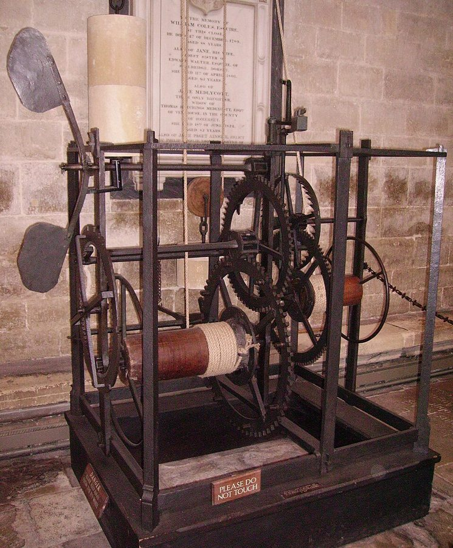
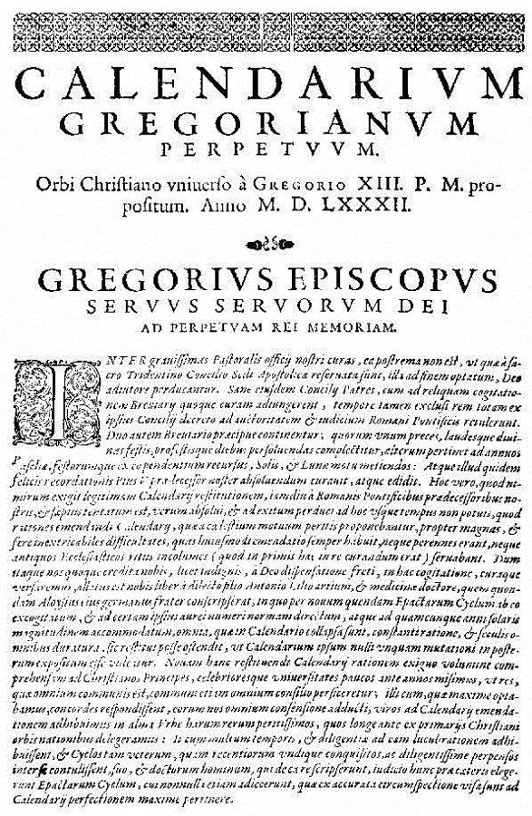
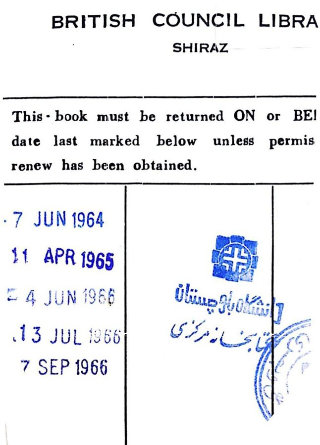

这一页在做什么
这一页是第 8 章的前两节，全书从这里正式转到「期限」。作者先不讲作家，讲三样计时的工具：钟、历法、记事本，看它们各自怎样切分时间、哪一样最会「生产」短时间；然后转到日常生活：借书、交房租、分期付款、贷款，中间两次停下来，从德文、法文、西班牙文、意大利文看语言怎样说期限。读的时候抓住一个词：Frist，一段有起点、有终点、到点要交差的时间。

英国索尔兹伯里大教堂的钟，一般认为造于 1386 年前后，是现存最古老的机械钟之一，1956 年修复后还能走。它没有表盘，只靠敲钟报时：第 4 段说英文 clock 对应德文 Glocke（钟铃），看它就明白。Immanuel Giel，公有领域，维基共享资源 读之前：这一页在全书的哪里
上一章，技艺那一头变成了无限，布鲁门贝格连「时间剪」的比喻也放弃了。第 8 章换一个方向：先不比人生和技艺谁长谁短，看人每天实际碰到的短时间是什么样子。第 3 段的沙漏回指第 4 章提埃波罗画里克罗诺斯手中的沙漏；第 30、31 段回头再谈第 3 章富兰克林的两句格言：一句说它不全对，一句补上「倒过来不成立」。期限的两个端点里后一个更要紧，要到下一页讲海德格尔时才说透。
钟、日历、记事本都管时间，为什么作者说只有记事本才是「期限之历」？一段有头有尾的时间，和一个截止的时刻，差别在哪？
读的时候带着这几个问题。不用先找答案，读完回来对照「检查一下理解」。
作者说钟是一台「生产」时间的机器。它生产的是什么样的时间？日历在这一点上和钟有什么不同？§1
借书的人和图书馆，谁压着谁？作者为什么不肯拿阶级斗争的框架来看这层关系？§2
「时间就是金钱」倒过来说为什么不成立？这对借钱的人意味着什么？§2
这一页的路线
两节里都有花饰分隔，走的是两段路。§1 从工具讲起，分三截：钟（第 1–6 段）、历法（第 7–13 段）、记事本（第 14–17 段）。前两截像在讲器物史，读到第 16 段才看出用意：记事本上写的不是一个时刻，而是一段到期的时间，「期限」在这里第一次当术语用。§2 换到日常生活，跳得更多：先拿图书馆借书给期限下定义、看借贷两方的关系（第 18–22 段）；然后两次插进语言学，从德文 Frist、法文 délai、西班牙文 plazo，讲到「到期」「最迟」和圣人节（第 23–27 段）；最后回到钱，讲分期、信贷和富兰克林（第 28–31 段）。语言学那两截最容易读散，把它们当成对「期限」这个词的一次体检。
§1 工具
§2 日常的期限
钟 第 1–6 段
历法 第 7–13 段
记事本 第 14–17 段
期限之历 第 16 段
借书期限 第 18–22 段
Frist 的词源 第 23–24 段
到期、最迟 第 25–27 段
分期、信贷 第 28–29 段
钱换不回时间 第 30–31 段
本站示意图。蓝点是第 1 节的工具，橙点是第 2 节的日常场合，粗体字是两节各自的落点；斜虚线是两节之间的转换。每一站下面是它在原书里的段落，和花饰分隔大体对应。 作者落在哪： 现代社会里的短时间，最常见的样子是期限：一段由起止日期界定、到点要交差的时间。压力落在借的一方，可多数人这里是借方、那里又是贷方；钱花了还能再挣，生命时间却换不回来。
分节地图
这一页是原书第 8 章的第 1–2 节。粗体是这一节的主角；斜体是英文这一节开头的几个词，在电子书里搜它就能跳到那里；节里的转折用段号点出来。读完打个勾。
钟、日历和记事本约 1800 词 First, we must discuss clocks, which … 第 7 段起讲历法，第 14 段起讲记事本；第 16 段的「期限之历」是这一节的落点。 借书期限、Frist 的词源和富兰克林约 2000 词 Short time has many faces. … 第 23 段起讲词源，第 28 段起讲信贷；第 31 段说「时间就是金钱」倒过来不成立。
先用中文过一遍：这一页的概念
作者常常一笔带过、默认你懂的概念，这里先从书外讲一遍：它从哪来，是什么意思。它在这一页起什么作用，看每块最后一句。讲过的概念都汇总在概念汇总 。
§1 循环的时间和线性的时间 cyclical / linear time 把时间想成圆还是想成箭，是一组老对照。圆：日出日落、四季、一年一度的节日，转一圈回到原处，农业社会和宗教的节期都这样过日子。箭：从一个起点往前走，一去不回，从创世走向末日的基督教历史观、近代物理学说的「时间之箭」都是这样想的。日常的计时工具多半两样都有：表盘一天转两圈，是圆；年份一年加一，是箭。程序员熟悉的例子：日志按天轮转是圆，Unix 时间戳一直往上加是箭。
在这一页： 第 2、5、8 段，作者用它给钟和日历分类：表盘、电子钟、日历都是循环的，只有年号是线性的。
§1 拼凑 bricolage 法文 bricolage 本义是业余的修修补补，bricoleur 是手边有什么就用什么的杂活匠。法国人类学家列维-斯特劳斯（Claude Lévi-Strauss）在 1962 年的《野性的思维》里把它变成术语：神话式的思维像杂活匠，不按图纸从头设计，而是拿现成的零件拼出新东西，拼出来的东西还带着零件原来的痕迹。和它相对的是工程师，先有蓝图再找材料。软件里最接近的说法是「历史包袱」：系统是一层层补丁叠出来的，能用，却说不出整体的道理。
在这一页： 第 9 段，作者说历法就是这样拼出来的：日怎么算、七天一周、每月几天，都是历史留下的零件。
§1 期限 Frist（deadline-period） 德文 Frist 指一段规定好的时间：有起点，有终点，在终点之前要做完某件事（或者不做某件事）。它和英文 deadline 不同：deadline 只是终点那一刻，Frist 是整段。这个词古高地德语里就有，来源不明；它也可以指「宽限」，派生出 fristen（勉强维持，如 sein Leben fristen）、befristet（有期限的）。英文没有对应的词，译者在本章注 2 说，用 deadline-period 来译，书里有时也写 term-deadline。程序员可以把它想成带 TTL 的租约：从拿到那一刻起计时，到点自动失效，日程里通常只记失效的时间。
在这一页： 第 16 段起当术语用，第 18 段下定义：一段一般由起止日期界定的时间。记事本上通常只写终点。
记事本上通常只写这一天
Frist：整段时间
起点
终点
宽限、延期
常常不写出来
越近终点走得越快
到期（落下）
délai、滞纳金
「最迟」：卡在终点之前，不许用尽
本站示意图，把第 16、18、23–26 段里关于期限的说法画在一条线上。「越近终点走得越快」「到期」是第 25 段的比喻，「宽限、延期」见第 23、24 段。
书里的人和作品
按在书里出现的顺序排，标题前是节号。作品只讲到读懂这一节需要的程度。
§1 钟表和「钟表匠」上帝第 1 段的 Deism 是自然神论：17、18 世纪一批思想家认为，上帝造好世界、定下规律之后就不再插手，好比钟表匠做好一只表，上紧发条让它自己走。作者提醒，这个比喻要先有机械钟才想得出来。书里说机械钟约 1300 年出现在意大利北部，第 1 章第 3 节讲阿尔贝蒂时也说过（见 01b ）。早期的塔钟有不少没有表盘，只靠敲钟报时，本页开头那架索尔兹伯里的钟就是这样。
§1 沙漏、提埃波罗和席勒的《钟之歌》第 3 段说，沙漏在欧洲大约和机械钟同时出现，适合量一段有限的时间，比如布道和演讲的时长；作者推测它想必很快就成了人生短暂的象征。提到的提埃波罗《时间》（Il Tempo），画的是克罗诺斯拿着沙漏，第 4 章第 1 节讲过这幅画（见 04 ）。第 4 段的席勒《钟之歌》（Das Lied von der Glocke，1799）写铸一口钟的工序，中间穿插人从出生到死去的一生。书里说，读者常被要求背下这首诗，好加强时间感。
洛伦泽蒂 1338–1339 年在锡耶纳市政厅画的壁画《好政府的寓意》局部：「节制」（头顶写作 TENPERANTIA）手托沙漏。它常被举为欧洲最早明确画出沙漏的图像。Ambrogio Lorenzetti，公有领域，维基共享资源
§1 造历的人第 9 段点了三个造历的名字，作者没有介绍。第 10 段的伊西多尔抱怨「日」有两种算法：只算白天，还是连夜带昼一整天；第 5 章第 1 节待客三天怎么数，是同一类问题。第 12 段说 7、8 月以凯撒和奥古斯都命名，这不错；又说为了让这两个月有 31 天，从 2 月拿走了两天，这是中世纪传下来的说法，史家一般不采信：2 月在凯撒改历以前就只有 28 天，一般认为 8 月的 31 天在凯撒改历时就定了。
尤利乌斯·凯撒 Gaius Julius Caesar，前 100–前 44 罗马政治家，公元前 46 年主持改历，定下 365 天、四年一闰的儒略历。
狄奥尼修斯 Dionysius Exiguus，约 470–约 544 书里拼作 Dionysios。修士，在罗马工作，外号 Exiguus 是「小的、卑微的」。525 年编复活节日期表时用「主的年份」给年份编号，这就是公元纪年的来头，第 8 段说年号从基督诞生算起，说的就是它。
格里高利十三世 Gregory XIII，1502–1585 教宗，1582 年颁布诏书改历，删去 10 天（10 月 4 日的下一天是 10 月 15 日），改了闰年规则，就是今天通用的公历。
伊西多尔 Isidore of Seville，约 560–636 塞维利亚主教，编《词源》（Etymologiae），在中世纪流传极广的百科全书。

格里高利十三世改历诏书《Inter gravissimas》的第一页。顶上大字是「永久的格里高利历」，年份 M.D.LXXXII 即 1582。Gregory XIII，公有领域，维基共享资源 §1 撕页日历、编历书的文人和记事本第 7 段说，撕页日历上值得留下的，除了婚礼、生死这样的大事，还有编历书的文人写的妙语，举了富兰克林和布莱希特。富兰克林编了二十多年《穷理查历书》，第 3 章第 3 节讲过（见 03b ）；布莱希特有一本《日历故事》（Kalendergeschichten，1949），接的是德国在历书里登短故事的老传统。第 14 段说记事本是二十世纪发明的；书外补一句：预先印好日期、卖给商人用的日记本，伦敦文具商 John Letts 1812 年就出过。
§2 巴别图书馆和康德的义务第 21 段括号里的 Library of Babel 没点作者，是阿根廷作家博尔赫斯 1941 年的短篇《巴别图书馆》：图书馆由数不清的六角形房间组成，收着所有可能写出的书。作者的玩笑是，只有这种图书馆才用不着借期。同一段说，按时还书好让下一个人借到，含着「一小部分康德的义务伦理」：康德主张，行动的准则要能成为人人都遵守的普遍法则。人人都拖着不还，借书这件事就不成立了。
博尔赫斯 Jorge Luis Borges，1899–1986 阿根廷作家，以短篇里的迷宫、镜子和无穷的图书馆出名，自己当过国家图书馆馆长。
康德 Immanuel Kant，1724–1804 德国哲学家。1785 年的《道德形而上学奠基》提出「定言命令」，伦理学里叫义务论。

伊朗设拉子英国文化协会图书馆的借书单，须知说书要在最后盖的日期当天或之前还。单子上只盖终点，不盖起点：正是第 16 段说的记事本的写法。Alikheradmand98，CC BY-SA 4.0，维基共享资源 §2 马克思的「主人和奴隶」第 22 段说，借期里给期限的一方压着另一方，这种权力关系会让人很快联想到雇主和雇员，括号里写「马克思：主人和奴隶」。主奴关系最出名的讨论其实在黑格尔的《精神现象学》（1807）；马克思讲的是阶级和阶级斗争，《共产党宣言》开头列举历史上的对立阶级，头一对就是「自由民和奴隶」。作者不接受这个框架：现代社会里期限关系层层交错，同一个人在这里是贷方，到那里又是借方。
§2 富兰克林的两句格言第 30 段的 He that goes a-borrowing goes a sorrowing 出自富兰克林的《致富之道》（The Way to Wealth，1758），就是第 3 章第 3 节讲过的亚伯拉罕老爹那篇演说，那里已经说过借债是头号恶习。第 31 段的 Time is money 出自 1748 年的《给一位年轻商人的忠告》（见时间就是金钱 ）。作者在这里回头再谈这两句：前一句不全对，后一句不能倒过来。另外，第 27 段说大斋期省下的钱正好拿来在复活节还，可以对照第 3 章第 3 节穷理查那句：欠债要在复活节还的人，嫌大斋期太短。作者没有把两处连起来。
词与短语
你用 Kindle，单个生词长按就能查，这里只收词典帮不上的：每个词都认识、合起来不懂的说法，学术腔，没翻译的外文，典故。斜体小字是原句里连续的几个词，错字照电子书原样，搜它就能跳到那里。
§1 钟、日历和记事本
the clockmaker of the universe
… by the philosophical school of Deism, …
宇宙的钟表匠
Deism 是自然神论：上帝造好世界就不再插手，像钟表匠做好表让它自己走。见上面「书里的人和作品」。
to the point of perfection and obsession
… to the point of perfection and obsession.
精到极致，以至于着了魔
to the point of 是「到了……的地步」。perfection 在这里是「完善到头」，和 obsession 放在一起，带着讽刺：对时间的控制已经过了头。
the sun’s (apparent) movement
… the arc of the sun's (apparent) movement …
太阳的视运动
apparent 是天文学的「视」：看上去在动，其实是地球在转。不是「明显的」。
must soon have taken on
… it must soon have taken on the …
想必很快就有了（象征的作用）
must have done 是对过去的推测，不是「必须」。作者是在推断沙漏怎样成了人生短暂的象征，没有给证据。
a remedy for an inadequate understanding of periods of time
A remedy for an inadequate understanding …
（钟面）显示不好一段时间，这个毛病的补救办法
understanding 别硬译成「理解」。上一段刚说过，日晷和钟面只指出时间点，不擅长显示一段时间；补救办法就是让钟按刻敲响。
turret clocks
… were capable of marking deadlines, …
塔钟
装在教堂、市政厅塔楼上的大钟。turret 是小塔。
set the pace of
… and set the pace of work …
给……定节奏
pace 是步速。钟声告诉大家什么时候开工、吃饭、歇息。
did not escape the poets
… of bells did not escape the poets.
诗人们也注意到了
X did not escape Y 是「Y 没有漏掉 X」，主语和宾语要倒过来读。
Schiller’s Bell (Glocke)
It was easily internalized by readers …
（诗名）席勒《钟之歌》
德文原题 Das Lied von der Glocke（1799）。internalized 的主语是上一句钟的象征意义：读者背诗，也就把钟代表的时间感记进了心里。
leaves little to be desired
Their precision leaves little to be desired, …
几乎无可挑剔
字面是「留下可以期望的不多」，意思是已经够好了。下半句 but 才是作者要说的：再精确也还是循环的。
insofar as it is short
… time, insofar as it is short.
就它是短的那一面而言
insofar as 是「就……而言」，不是「只要」。钟生产出来的不是随便什么时间，而是切成小段的「短」时间。这句是第 1 节第一截的落点，下面「值得停下来的句子」细讲。
tear-off calendar
… form of a tear-off calendar.
撕页日历
一天一页，过一天撕一页。前面的 classical 加了引号，是说这种日历算得上「经典款」。
this says quite a bit about time
… this says quite a bit about …
这很能说明时间是怎么回事
says quite a bit 是「很说明问题」。插在句子中间：过去的一天被撕掉扔了。电子书里前后两个破折号都成了连字符（day-and、time-is）。
literary calendar-maker
… a literary calendar-maker (Franklin, Brecht) …
编历书的文人
在历书里写格言、短故事的人。富兰克林、布莱希特见上面「书里的人和作品」。
the Christian ecclesiastical year
… the Christian ecclesiastical year, with its …
教会年（礼仪年）
从将临期到复活节、圣灵降临节的一轮节期，年年重来，和 civil year（民用年）并列。
a flying arrow of time
… a flying arrow of time that speeds …
飞驰的时间之箭
「时间之箭」是物理学的说法：时间只朝一个方向走。作者说数学家和自然科学家有时「固执地」把它当唯一真实的时间，口气是不以为然。
not to say somewhat slovenly
… not to say somewhat slovenly, fashion.
甚至可以说有点邋遢
not to say 是「甚至可以说」，往重里说一步，不是「不是说」。
cobbled together
… rather bizarrely cobbled together in a …
七拼八凑出来的
cobble 原是补鞋，引申为草草拼凑。紧接着的 bricolage 是同一个意思，见概念块「拼凑」。第 12 段又用了一次。
Chaldean-Hebraic origin
… of Chaldean-Hebraic origin, is a purely …
来自迦勒底和希伯来
迦勒底人指古巴比伦一带的人，以天文星占出名。七天一周在《圣经》里对应上帝六天创世、第七天安息。
the reservoir of time on which … drew
This was the reservoir of time …
他们从中支取天数的「时间库」
draw on 是「动用、支取」，像从水库取水。作者在复述 2 月被拿走天数的说法，这个说法史家一般不采信，见「造历的人」。
as much time as it needs: enough
… takes as much time as it needs: …
要多少时间就占多少：足够
冒号后面只有一个词。全书讲的都是时间不够，这里难得说一次「够」：只有贴着自然的四季不缺时间。
is to be praised or blamed for
… is to be praised or blamed for …
（这件事）是功是过，都要记在……头上
be to be done 是「应当被……」。作者不表态记事本是好是坏，只说账算在二十世纪名下。
agendum, pl. agenda
… (Latin agendum, pl. agenda) or …
（拉丁文）该做的事，复数
agere（做）的动名形式，字面「要被做的」。英文的 agenda（议程）就从这里来，好几种欧洲语言把记事本也叫 agenda。
amounts to a thin dial
… it amounts to a thin dial.
等于一个薄薄的表盘
amount to 是「等于」，不是「数量达到」。一天一页、按钟点分格，翻开就像一只摊平的钟。
memoria futuri
… is therefore the future (memoria futuri).
（拉丁文）对未来的记忆
记忆本来朝向过去，这个说法故意把它掉个头：记事本替人「记住」还没发生的事。
falls through
… or forgets the date or the time, …
（约会、计划）落空，泡汤
fall through 不是「掉下去」。这一句里的 he 是那个承包商，作者举的例子。
the clock starts running
… a beginning point at which …
开始计时
口语，原意是比赛开始掐表。这里的 clock 不是真的钟：约会一写进本子，倒计时就开始了。
terminus
… the deadline (Latin terminus), is entered …
（拉丁文）界石；终点
罗马人的地界石，也是守护地界的神。英文 term、terminal、determine 都从这里来。
Fristengerechtigkeit
… new virtue of respecting deadlines (Fristengerechtigkeit) …
（德文）守期限（的美德）
由 Fristen（期限，复数）和 Gerechtigkeit（公正）拼成，字面「对期限的公正」，和 fristgerecht（按期的、不误期限的）同根。英译作 respecting deadlines。前面两样美德守时、守序，分别靠钟和日历。
§2 借书期限、Frist 的词源和富兰克林
on petition
However, on petition the lending period …
经申请
petition 在这里不是「请愿书」，就是图书馆的续借申请，口气带点公文腔。
Library of Babel
… not in charge of an infinite …
（小说名）《巴别图书馆》
博尔赫斯的短篇，作者没点名。见上面「书里的人和作品」。
the Kantian ethics of duty
… a small part of the Kantian ethics …
康德的义务伦理学
a small part 是作者的分寸：按时还书只沾了康德一点边。
quickly-too quickly-think of
… make some people quickly-too quickly-think of …
很快地（太快地）联想到
两个连字符其实是破折号，插进来的 too quickly 是作者在表态：这样联想是轻率的。下文就说这个比较 unproductive。
this comparison is unproductive
But this comparison is unproductive insofar …
这个比较没有用，推不出什么
unproductive 在论证里是「没有收获、无益」，和产量无关。
term-deadlines
… a society relying on such term-deadlines.
期限
译者在这一章里 deadline-period、term-deadline、lending period 轮着用，背后多半都是德文 Frist。见概念块「期限」。
well attested in Old High German
… is already well attested in Old High German …
在古高地德语里就有不少文献用例
attested 是语言学术语：有书面材料作证。古高地德语是约 8–11 世纪的德语。
ridge-tree (Firstbaum)
… rests on the ridge-tree (Firstbaum) as …
（德文）脊檩，房顶最高的那根梁
德文 First 是屋脊。前一句的 first 指的就是它，不是英文的「第一」。作者绕了两层：先说老房子压在脊檩上，古代经济也压在按期交付上；段末再说，期限一推再推，就像挪动脊檩，债主的房子会塌。今天的词源词典说 Frist 来源不明，只说它的构词和 First 相似。
born by the wings of fear or desire
… born by the wings of fear or desire, …
被恐惧或愿望的翅膀托着
born 应为 borne（被承载）。主语是「这个词的意思」：要交差的人又怕又盼，词义就飞过终点那条线，Frist 从「期限」变成了「宽限」。
délai
… expressed by the word Mai, which …
（法文）期限；延期
电子书识别成 Mai，应为 délai。作者说它作为法律用语在中世纪进了英国，成了英文的 delay。作者说它们来自通俗拉丁语 dilatare（拉长）。
sans delai
… expressions such as French sans delai …
（法文）立即，毫不拖延
正确拼法 sans délai。
a deviant construction
In Spanish there is a deviant construction.
另走一路的构词
deviant 在这里只是「偏离（前面那一类）」，没有「越轨、变态」的贬义。西班牙文的词不从「拉长」来，而从「约定」来。
plazo
The Spanish word for term-deadline is plazo.
（西班牙文）期限
来自拉丁文 placitum（商定的、合意的），所以作者说期限像一份准合同。
gets going rather slowly
… but at first gets going rather slowly.
起步很慢
get going 是「动起来」。作者把期限写成一个会跑的东西：开头慢吞吞，越近终点跑得越快。
Laufzeit
… (German Laufzeit) has reached its end …
（德文）存续期、期限
字面「跑的时间」，laufen 是跑。贷款、合同的期限都叫 Laufzeit，所以英译用 run 来对。
falls due
… has reached its end and the debt …
到期（应付）
fall due 是「到期」，不是「落下」。但作者正要你想到「落」：后面说意大利文 scadenza、法文 échéance 都来自拉丁文 cadere（落下）。
scadenza / échéance
… cf. Italian scadenza and French echeance, …
（意大利文 / 法文）到期日
电子书印作 echeance，正确拼法 échéance。第 9 章包法利夫人的债就是一张张 échéance。
runs out
… comes to its contractually agreed-upon end: …
到期，用完
接着前面「跑」的比喻：run 跑完了，就是 run out。一个熟短语被作者拆开来用。
nach strengster Rechnung
… and clocks require nach strengster Rechnung.
（德文）按最严格的算法
Rechnung 是计算、账目。日历和钟要求精确，所以约定期限时要卡死。
spätestens / frühestens
… (fri hestens), through whose restrictions it …
（德文）最迟 / 最早
电子书识别成 spatestens、fri hestens。作者的意思是：写上「最迟」，期限就不会被「用尽」，交差的人不会拖到最后一刻。
St. Never’s day
… of course, St. Never's day.
「圣永不来日」，就是永远不还
德语里有同样的俗话 Sankt-Nimmerleinstag：一个日历上没有的圣人节。借钱的人最喜欢约在这一天还，这是句笑话。
Lent
… using the money saved during Lent.
大斋期（四旬期）
复活节前约四十天的斋戒期，少吃少花，省下的钱正好在复活节还债。
must not remain idle
… money must not remain idle, but …
（钱）不能闲着
idle money 是「闲置资金」。下文给 work 加了引号：钱要像人一样「干活」，在市场上周转生息。
goes a-borrowing goes a sorrowing
… warns against contracting debts in a frightening …
去借钱，就是去找愁
a- 是古英语留下的前缀（相当于 on），a-borrowing 是「去借」。borrowing 和 sorrowing 押韵，好记。出处见上面「富兰克林的两句格言」。
is not in every respect correct
… is not in every respect correct …
并不是处处都对
部分否定：不是说富兰克林错了，是说他只对了一部分。从道德上说借债该怕，从经济上说借债又必要。
puts a nice profit in one’s own pocket
… a nice profit in one's own pocket.
让自己赚上一笔
nice 在这里是「可观的」，口语。前面插的 if all goes well（要是一切顺利）别漏了：作者没说借债一定赚。
a daring, risky, fortune-hunting connection
… a daring, risky, fortune-hunting connection …
大胆、冒险、靠运气求财的结合
fortune-hunting 平常多指为钱结婚，这里只取「追逐财富、碰运气」。connection 指的是钱和期限绑在一起。
a nonrenewable resource
Life-time is a nonrenewable resource; …
不可再生的资源
本是说石油、煤的词。life-time 是译者要你当术语读的「生命时间」，见
生命时间 。
surplus value
… through the surplus value of interest …
（利息带来的）增值
surplus value 是马克思「剩余价值」的标准英译，但这里只是说放贷人靠利息和复利多收回来的钱，别读成马克思的理论。
读不通的扫描错字：
… Tiepolo's painting 11 Tempo. 应为 Il Tempo（意大利文「时间」），提埃波罗的画名。… is a purely religious or cultural. 句子缺了名词，意思是「七天一周的根据纯粹是宗教的、文化的」。… expressed by the word Mai, … 应为 délai。… (fri hestens), through whose … 应为 frühestens（最早），前面的 spatestens 是 spätestens（最迟）。
读完：作者到底说了什么
读完这一页的几节再看。下面是作者在这几节里的论点，由本站按论点重新组织，不按原书的顺序；每条右上角是依据所在的段落，拿不准就回书里那几段再读一遍。
钟生产的是「短」的时间 钟把能量变成标准化的时间，所以可以看成生产时间的机器，产品是短的时间。表盘只指时间点；水钟、蜡烛、沙漏更会量一小段，按刻敲响的钟声又把这一小段传遍全城，给工作、吃饭、休息定了节奏。
§1 第 3、4、6 段 历法管得住时间，却是历史拼出来的 日历上的日期年年重来，只有年号一路往前。日怎么算、一周为什么七天、每月几天，光看天象定不下来，是历史凑起来的。只有四季最贴近自然，时间是「够」的。
§1 第 8、9、13 段 记事本其实是期限之历 记事本把日历和钟合在一起，朝向未来。本子上通常只写终点，可写下的那一刻就开始计时，用的人每天翻看，看着起点一天天逼近终点。它以守时、守序为前提，在这上面长出一种新美德：守期限。
§1 第 14、16、17 段 期限是不对等的关系，但不是阶级关系 工业和后工业社会里，短时间最常以期限的样子出现：一段一般由起止日期界定的时间，到点要交差。压力主要来自给期限的一方；可作者认为用阶级斗争的图式看它没有用，因为大多数人这里当一方，那里又当另一方。
§2 第 18、22 段 时间能换成钱，钱换不回时间 信贷经济里借债是必要的，所以富兰克林吓唬人的借债格言并非处处都对。「时间就是金钱」却不能倒过来：生命时间只减不增，钱还有办法再挣。期限让借贷双方都可能得利，也藏着破产的风险。
§2 第 30、31 段
合起来： 这两节把「期限」从日常生活里立起来：钟、历、记事本是它的工具，借书、房租、贷款是它的场合。下一页讲法律里的期限，再讲海德格尔，到那里，人的一生本身也成了一段期限。
值得停下来的句子
This product is time, insofar as it is short.— §1 第 6 段。本站译：这个产品就是时间，就它是短的而言。
前一句刚说钟是「生产时间的机器」，这一句交代产品是什么。判断落在 insofar as 后面：钟生产的不是一般的时间，而是切成时、分、秒的短时间。一台机器能「生产」时间，听上去荒唐，作者就是要用这个荒唐的说法提醒你：钟表时间是人造出来的东西，而且天生是短的。
Life-time is a nonrenewable resource; it always decreases, never increases.— §2 第 31 段。本站译：生命时间是不可再生的资源，它只会减少，从不增加。
分号前面借经济学的词，后面用一对反义词（decreases / increases）和一对副词（always / never）把话说死。下一句马上拿钱来比：钱也常常减少，但有办法再挣。「时间就是金钱」倒过来不成立，理由就在这一句里。
检查一下理解
先在心里答，再点开。答错的那题，回书里把对应那一节再读一遍。
1.（§1）作者为什么说日晷和机械钟在某些方面不如水钟、蜡烛和沙漏？ 日晷和表盘指出的是一个个时间点；水钟、蜡烛和沙漏更适合显示一段较短的时间，比如布道、演讲限多长。后来塔钟按刻敲响，才补上这一点。
2.（§1）钟表和日历上，什么是循环的，什么是线性的？ 表盘每天、日历每年重来，数字电子钟看上去像一直往前跳，也是每 24 小时重来。只有年号从基督诞生一路往前数，是线性的。
3.（§1）记事本上通常只写一个日子，作者为什么说它记的是「一段」时间？ 约会写进本子的那一刻就开始计时，到约定的日子结束；用的人每天翻看，看着起点一天天逼近终点。所以作者说记事本其实是期限之历。
4.（§2）作者怎样给期限下定义？又补了什么例外？ 期限是一段一般由起止日期界定的时间，在终点之前要做某件事（或不做某件事）。如果起点由当事人自己看情况定，就可以不写明起点。
5.（§2）德文 Frist 为什么有时不指期限，反而指延期？ 作者的解释是：古时期限常常难守，要交差的人只盯着终点，词义就越过终点，变成宽限、延期，好减轻压力。给期限的一方则要防着延期把自己的「房子」拖垮。
6.（§2）作者为什么说「时间就是金钱」不能倒过来？ 生命时间可以按劳动和买卖的规则换成钱，换来的钱却换不回时间：生命时间是不可再生的资源，只减不增，钱用掉了还能再挣。
用一句话说这一页，写给一个没读过的人。
想一想：翻一翻你这周的日历和待办清单，有几件事带着截止日期？有没有哪件你觉得重要、却没有期限的事，一直被有期限的事挤到后面？
精彩回顾
读过又忘了，从这里想起来。挑的是这一页最值得记住的人、说法和比喻，不按原书顺序；每条后面是节号，想细看就回书里那一节。全书各页的这一节都收在全书回顾 。
一句话： 从钟、历、记事本讲到借书和贷款：现代人碰到的短时间，最常见的样子是一段有起点、有终点、到点要交差的期限（Frist）。
生产短时间的机器 钟把能量变成标准化的时间，作者说它生产的产品就是时间，而且是短的时间。
§1 拼凑出来的日历 日怎么算、七天一周、每月几天，天上都定不了，是历史七拼八凑出来的。只有四季贴着自然，时间是够的。
§1 期限之历 记事本上只写终点，可写下那一刻就开始计时，每天翻看，起点一天天逼近终点。作者说记事本其实是期限之历。
§1 期限和屋脊 书里说格林兄弟的词典把 Frist 和 First（屋脊）连在一起：房子压在脊檩上，古代经济压在按期交付上。期限一推再推，债主的房子就要塌。
§2 圣永不来日 从前靠圣人节记还钱的日子：五一、圣约翰节、圣马丁节。复活节最受欢迎，大斋期省下的钱正好拿来还；借钱的人最爱的是「圣永不来日」。
§2 时间是钱，钱不是时间 时间能换成钱，钱却换不回时间：生命时间只减不增。所以作者说「时间就是金钱」不能倒过来。
§2